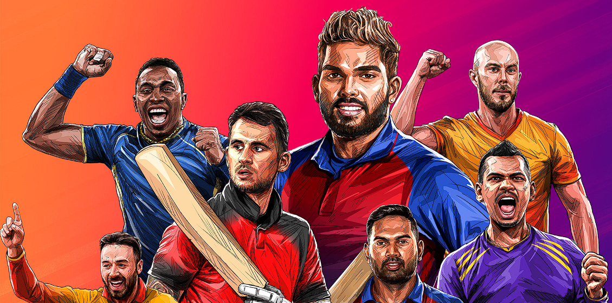
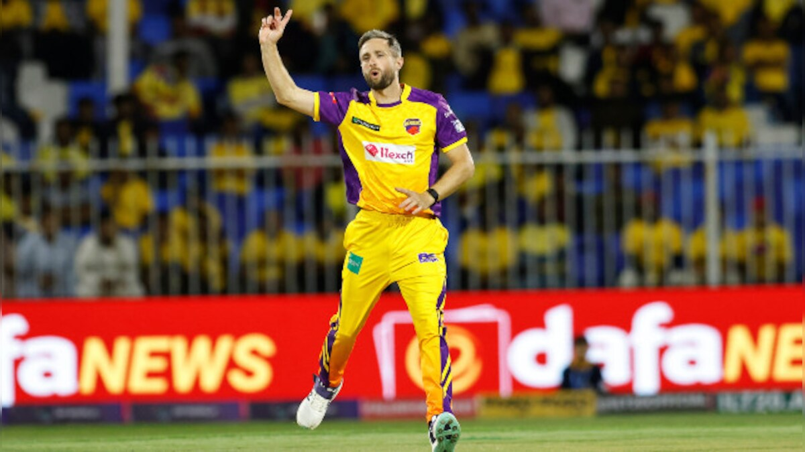

Bringing the ILT20 Roar to Your Lives : A Designer's Take
—

Intro —
Imagine the roar of the crowd, the thrill of a six soaring into the night sky, and the excitement of yelling predictions before every ball and cheering for your favorite teams with your pals – all from the comfort of your couch!that was exactly our mission for DP world ILT20 S2, to design a live streaming experience that throws you and your cricket buddies right into the heart of the cricketing action.
Recap on 2023
We kicked off our journey into live sports streaming with the tournament’s very first season of ILT20 where we designed features like "Play and Win 2023" and "Keymoments" to keep the cricket lovers glued to the action. But this year, we wanted to take the experience to the next level.

Thus we asked ourselves
"How might we create a seamless and engaging live sports experience that replicates the vibrant atmosphere of stadium and allows users to watch match with their pals"
Crafting live sports exp. —
The Time Crunch: A Catch We Had To Play
We only had a single quarter to design, develop, and test the
entire experienceso the clock was ticking for us. Every moment
counted. To tackle this challenge, we leveraged our learnings
and user insights from last year’s ILT20 along with that we
leveraged the existing functionalities of "Play and Win 2023"
and "Key moments" as a solid foundation.
In this high-pressure environment, we adopted the philosophy of
"done is better than perfect." This allowed us to prioritize
core functionalities that fostered engagement and community,
while leaving room for future refinements based on user
feedback.
And then, we built these:
1.Live feed: Talk cricket, cheer together
2.Analytics: For cricket gurus!
3.Watch Party: Bring the stadium home!
4.Key Moments: Never miss a beat!
Eastablishing Guiding Product Principles
While ZEE5 has a well-established design process, for the fast-paced environment of ILT20 Season 2, we needed to adapt. We recognized the importance of prioritizing efficiency and user needs. To achieve this, we initiated the project with a collaborative session involving product managers and designers. Together, we defined four guiding product principles that would steer our design decisions:
Simplicity
In a time-constrained environment, simplicity became a superpower. We focused on core functionalities that would deliver maximum impact and user engagement, keeping the overall experience clear and clutter-free.
Ease of Access
We ensured a seamless user experience from onboarding to enjoying the features. Every interaction needed to be intuitive and clear, making it easy for cricket fans of all tech savviness to jump right in.
Flexibility
Building features with flexibility allowed for future iterations and adapt to changing requirements, preferences, and market conditions. Allow for customization, configuration, and extensibility to meet diverse user needs
Scalability
Considering the potential surge in viewership during the tournament, scalability was paramount. The features needed to handle a high volume of users without compromising performance